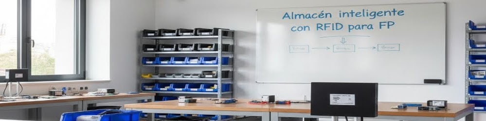

Almacén Inteligente con Control de Inventario mediante RFID
Sistema automatizado para la gestión de inventarios en aulas de Formación Profesional

Objetivo del Proyecto
Digitalización y Control del Inventario
Implementar un sistema automatizado basado en tecnología RFID que permita el registro en tiempo real del inventario del aula, optimizando la gestión de los recursos y garantizando la trazabilidad de cada movimiento.
Mejora en la Gestión de Recursos
Facilitar el acceso a la información a través de una interfaz web, permitiendo conocer quién ha retirado el material y en qué momento, reduciendo errores y pérdidas.
Eficiencia y Sostenibilidad
Reducir el tiempo dedicado al control manual del inventario y fomentar prácticas sostenibles en la gestión de los recursos, en línea con los Objetivos de Desarrollo Sostenible (ODS 9 y ODS 12).
Innovación Educativa
Contribuir a la digitalización del centro, fomentando el uso de tecnologías emergentes y promoviendo la colaboración entre el centro educativo y empresas del sector.
Desarrollo del Proyecto
Fase 1: Diagnóstico y Planificación
Duración: 1 mes
- Revisión del proceso actual de gestión del inventario
- Reuniones con el equipo de gestión y empresa colaboradora
- Identificación de problemas y necesidades
- Elaboración de informe diagnóstico y especificaciones técnicas
Fase 2: Instalación y Configuración del Sistema RFID
Duración: 1 mes
- Selección y adquisición de dispositivos RFID y Raspberry Pi
- Instalación física de etiquetas en equipos y herramientas
- Montaje del lector en lugar estratégico del aula
- Configuración del servidor en Raspberry Pi
Fase 3: Implementación y Pruebas del Sistema
Duración: 2.5 meses
- Desarrollo de aplicación web con Django
- Integración del software con el lector RFID
- Implementación de autenticación de usuarios
- Pruebas de comunicación entre dispositivos
Fase 4: Integración de Procedimientos y Protocolos de Uso
Duración: 1 mes
- Definición de protocolos operativos para el uso diario
- Elaboración de manuales de uso y protocolos de operación
- Realización de sesiones piloto para validación
- Ajuste de parámetros según resultados
Fase 5: Capacitación y Formación
Duración: 1 mes
- Organización de talleres y sesiones de formación
- Desarrollo de materiales formativos (tutoriales, manuales, videos)
- Formación práctica para profesorado y personal
- Capacitación en tecnología RFID y gestión del sistema
Fase 6: Pruebas, Evaluación y Puesta en Marcha
Duración: 1 mes
- Recolección de feedback de usuarios
- Ajustes finales y despliegue oficial
- Evaluación del impacto en la gestión del inventario
- Difusión de resultados y creación de guía replicable
Galería del Proyecto

Conexionado del lector RFID hecho por los alumnos

Conexionado completo del lector RFID

Alumnos preparando la nueva instalación eléctrica para el receptor

Alumnos preparando la nueva instalación eléctrica en distintas aulas

Alumnos de FP de Grado Medio haciendo la instalación eléctrica en un aula

Alumnos montando la pantalla

Alumnos de FP de Grado Medio haciendo la instalación eléctrica en un aula

Título placeholder 8

Alumnos montando la pantalla

Alumnos montando el receptor en un aula

Montaje del sistema en el primer aula

Instalación para pruebas en el primer aula
Resultados Obtenidos
🔄 Registro Automatizado
Registro en tiempo real de la entrada y salida de material del almacén sin necesidad de intervención manual.
🌐 Acceso Web Seguro
Interfaz web accesible para consulta de inventario y registro con identificación de usuario responsable.
⏱️ Optimización del Tiempo
Reducción significativa del tiempo dedicado a la gestión manual del inventario.
🎯 Reducción de Errores
Disminución considerable de errores en el registro y optimización de la reposición de materiales.
📚 Modelo Replicable
Creación de una guía y documentación para facilitar la replicación del sistema en otros centros educativos.
👥 Formación y Capacitación
Capacitación del profesorado y alumnado en el uso de tecnología RFID, impulsando la innovación educativa.
Documentación de Apoyo
📖 Manual de Usuario
Guía completa para el uso del sistema Almacén FP por parte de docentes y alumnos.
Ver Manual🔧 Documentación Técnica
Código fuente, esquemas electrónicos y documentación técnica del hardware y software.
📊 Evaluación y Resultados
Informes de evaluación, encuestas de satisfacción y análisis de resultados del proyecto.
Ver Informes🎓 Materiales Didácticos
Presentaciones, tutoriales y recursos educativos para la implementación del sistema.
Acceder a Recursos